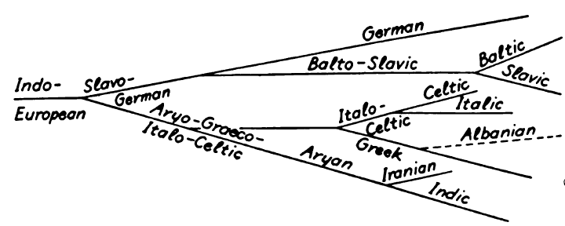

The linguistic relations between the Germanic group and the other Indo-European branches are a corollary to their geographical location and spread. The actual starting-point of the Indo-Europeans, their original home ('Urheimat'), is not known. At present, the greater weight of arguments seems to point to Northern or Central Europe,/EN1/ but the views favoring South-Eastern Europe/EN2/ or the steppes of Western Asia/EN3/ are not to be underrated. The conflicting views can in a measure be reconciled by assuming that the ethnic and linguistic conformity of the Indo-European group developed in a wide zone of migration,/EN4/ which extended 'from the 35th parallel N.L., from South-East to North-West, towards the Polar Circle',/EN5/ or 'on a long belt of land, reaching from France through all of Europe and the Kirghiz Steppe, as far as Iran'./EN6/
The concept of an Indo-European family is based upon linguistic facts, but docs not imply any anthropological coherence. We have no right whatever to speak of an Indo-European ('Aryan') race. Linguistic archeology (Hirt, Schrader, Much, Feist, and others) has drawn from linguistic material important conclusions as to common elements of an Indo-European culture, and many of these conclusions are doubtless correct. A varying proportion of identical vocabulary in the several Indo-European languages indicates certain facts of social and economic conditions common to all or most Indo-European linguistic groups. But to what extent this postulates the assumption of an 'Urvolk' is still problematic. Even the process through which separate Indo-European languages developed is not entirely clear. August Schleicher/EN7/ conceived the Indo-European primitive language as the trunk of a linguistic 'Stammbaum'. This branches out into a northern and southern group (Slavo-German and Aryo-Graeco-Italo-Celtic), and these main branches are subdivided in the form of the diagram (adapted) shown at the top of the following page.

More conservatively, Johannes Schmidt/EN8/ represented the relationship of the Indo-European languages in the form of intersecting circles, indicating that any two neighboring groups possess certain common characteristics (the diagram is slightly modified; Schmidt could not include Tocharian and Hittite):
IMAGE 2
A. Meillet/EN9/ uses the following diagram as an adaptation of Schmidt's 'wave theory':
IMAGE 3
Schleicher's theory is demonstrably incorrect. The systems of Schmidt and Meillet are not theories, but graphic representations of undeniable geographical facts. As such, they are obviously correct, but they do not attempt to explain the facts.
Linguistic Substrata(H2)/EN10/. Both racially and linguistically the Indo-European group constitutes a complicated blend in which the proportions of the common elements vary greatly from branch to branch. In addition to the common stock, every one of them had absorbed a great deal from the languages that had formed in the course of earlier migration all along the Indo-European belt. In many instances we have archeological, or even historical, evidence of aboriginal elements; thus the Celts largely represent an Indo-European expansion over Iberian (Basque) territory; the Slavs expanded over wide stretches of Finnish soil; the Hindus overwhelmed and partly absorbed Tibeto-Burmese, Dravidian, and Austro-Asiatic populations. The assumed aboriginal stock in a language is commonly termed the 'linguistic substratum'. The existence of such elements has been established with some probability in many instances, but the task is very elusive, and little certainty has as yet been attained. As to the Germanic languages, it has frequently been assumed that in the Baltic basin Indo-European speech was super-imposed over a pre-historic population of northern Europe, of whose speech, race, or culture nothing whatever is known. So far, all attempts to define it or to identify it with any known stock, for instance the Finns, have failed. Nevertheless, the existence of some 'Pre-Germanic Substratum' is probable, although for geographical and other reasons the common Indo-European element seems to predominate more definitely in the Germanic group than any where else. Some authorities, indeed, attach great importance to the hypothetical substratum. Their weightiest argument rests on the assumption that a very large proportion (one third or more) of the Germanic vocabulary has no cognates in other Indo-European languages, a claim based chiefly on the concluding table in Bruno Liebich's Wortfamilien der deutschen Sprache (/Ref1/1899, /Ref2/1905), which lists 504 Germanic, 211 West-Germanic, and 159 German 'roots' against 611 roots of Indo-European, or at least 'European', origin. But this table merely sums up the ultra-conservative etymologies in Heyne's Deutsches Wörterbuch. Since then, further etymological analysis has reduced the supposedly non-Indo-European element to a negligible quantity.